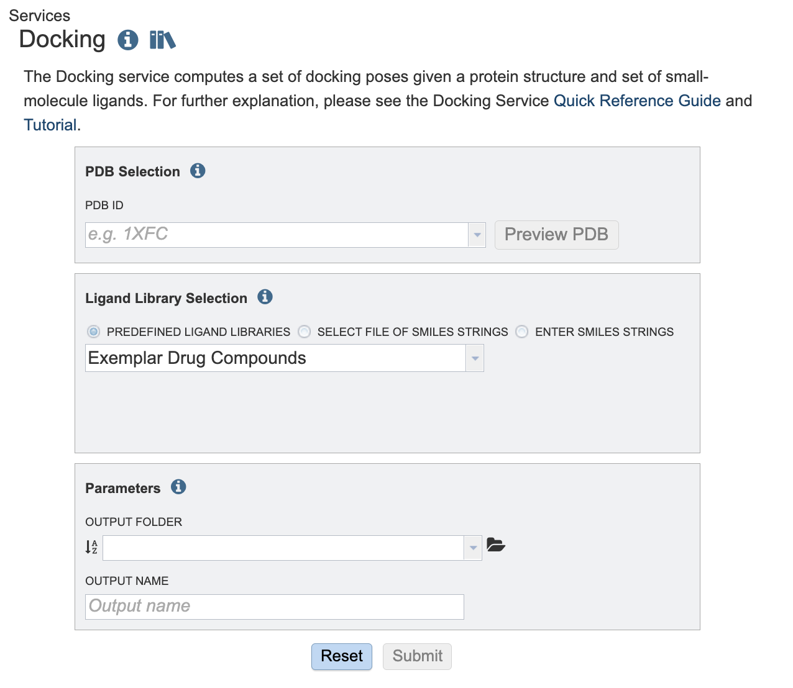
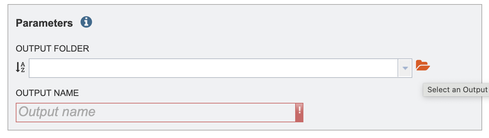

Small-Molecule Docking Service¶
Revised: August 8, 2024
Overview¶
The small molecule docking service uses the DiffDock method of molecular docking to compute a set of predicted poses for a given protein structure and a set of small-molecule ligands. This service utilizes a diffusion model, DiffDock to compute a set of poses for a target protein structure and a set of small-molecule ligands. The aim is to simulate and analyze potential binding scenarios “in silico”. Offering a crucial advantage by predicting the success of protein ligand combinations ahead of costly and time-consuming in vivo experiments.
See also¶
Using the Docking Service¶
The Docking submenu option under the “SERVICES” main menu (Protein Tools category) opens the Docking Service input form. Note: You must be logged into BV-BRC to use this service.

Below is a screenshot of the Docking Service landing page, as well as a summary of customizable parameters.

PDB Selection¶
PDB ID: The PDB identifier of the target protein. The PDB identifiers here come from the collection loaded into the BV-BRC resource. The Preview PDB button may be used to preview the given PDB structure using the BV-BRC structure viewer.
Ligand library selection¶
Choose a set of ligands to bind. These may be specified using one of the following mechanisms:
By using the Predefined Ligand Libraries option. We offer three ligand libraries. The exemplar drug database is intended to be used in demonstrations. This is a small set of ligands that we will walk through in this tutorial. The approved compound library are compounds approved by at least one of various governing bodies for human use. There are around two thousand compounds in this library. The experimental drug compound library is more robust, with nearly ten thousand compounds. The results from the ligand libraries will link out to DrugBank Online.
By using the Select Workspace File of SMILES Strings option. Here you may choose an existing file of SMILES strings from the workspace or upload a new file from your computer. This file can be formatted in two ways. The file can contain the ID, name and SMILE string separated by tabs.
DB00135 Tyrosine N[C@@H](CC1=CC=C(O)C=C1)C(O)=O
DB00515 Cisplatin [H][N]([H])([H])[Pt](Cl)(Cl)[N]([H])([H])[H]
Or the file can contain solely the ID, and the SMILE separated by tabs. For example:
Tyrosine N[C@@H](CC1=CC=C(O)C=C1)C(O)=O
Cisplatin [H][N]([H])([H])[Pt](Cl)(Cl)[N]([H])([H])[H]
By using the Enter SMILES Strings option, one or more SMILES strings may be pasted into the text box, one per line. If you wish to specify identifiers for the SMILES strings these may be provided before the SMILES string. For example:
Tyrosine N[C@@H](CC1=CC=C(O)C=C1)C(O)=O
Cisplatin [H][N]([H])([H])[Pt](Cl)(Cl)[N]([H])([H])[H]
Parameters¶
Output Folder: The workspace folder where results will be placed.
Output Name: A user-specified label. This name will appear in the workspace when the analysis job is complete.
Output Results¶

The Docking Service generates several files that are deposited in the Private Workspace in the designated Output Folder.
The top-level folder includes a file named DockingRreport.html. This contains a report summarizing the results of the docking against each ligand including scores for each match and a link to the structure viewer with the protein structure with the ligand placed in it.
Each protein that was docked has more detailed output in a folder named with the PDB identifier for the protein. In this folder is a set of additional folders, one per ligand. In these folders you will find the details for the docking of the protein with the given ligand:
result.csv contains a table summarizing the results. The columns are as follows:
Ident Ligand Identifier
Rank Rank of the pose as determined by DiffDock
Score The DiffDock output confidence score is assigned by DiffDock. This is referred to as the DiffDock Confidence score in the report. A lower confidence score indicates more confidence in the ligand protein docking successfully. This score, C, pertains to the pose of the molecule and ligand. If C is greater than 0 the pose is considered high confidence. If C is between -1.5 and 0 the pose is considered moderate confidence If C is below -1.5 the pose is considered low confidence. The above confidence guidelines pertain to protein ligand combinations of medium-sized proteins with small, drug-like molecules. This is what DiffDock had it the training set. For large ligands, large protein complexes, or unbound conformations, adjust these intervals downward.
lig_sdf The name of A SDF file containing the posed ligand
comb_pdb The name of a PDB file containing the ligand and PDB structure composed together
CNN Score CNN refers to a type of artificial intelligence called convolutional neural network (CNNs). The CNN Score gives a numerical value that represents how plausible is the binding pose is within the pocket based on the CNN model’s evaluation. The evaluation is based on key features of protein-ligand interactions. The CNN score is a value between 0 and 1 that is used to rank the poses of the ligand, where a score of 1 denotes a perfect ligand pose.
CNN Affinity CNN affinity is a hypothetical measurement of the strength of the binding interaction between the molecule and the target protein when docked as calculated by the central neural network described above. A higher affinity value indicates a greater chance of successful ligand docking at that pose.
Vinardo The Vinardo score is an empirical score function that evaluate the binding pose with terms from Gaussian steric attractions, quadratic steric repulsions, Lennard-Jones potentials, electrostatic interactions, hydrophobic interactions, non-hydrophobic interactions, and non-directional hydrogen bonds. A lower Vinardo score indicates a better chance of ligand binding.
<PDB_ID>_rank<N>_confidence-<CONF>.pdb - The composed PDB file for rank N with confidence CONF
rank<N>.sdf - A SDF file containing the top-ranked ligand pose
rank<N>_confidence-<CONF>.sdf - A SDF file for the pose with rank N
rank<N>_confidence-<CONF>.pdb - A PDB file for the pose with rank N
References¶
Olson RD, Assaf R, Brettin T, Conrad N, Cucinell C, Davis JJ, Dempsey DM, Dickerman A, Dietrich EM, Kenyon RW, Kuscuoglu M, Lefkowitz EJ, Lu J, Machi D, Macken C, Mao C, Niewiadomska A, Nguyen M, Olsen GJ, Overbeek JC, Parrello B, Parrello V, Porter JS, Pusch GD, Shukla M, Singh I, Stewart L, Tan G, Thomas C, VanOeffelen M, Vonstein V, Wallace ZS, Warren AS,Wattam AR, Xia F, Yoo H, Zhang Y, Zmasek CM, Scheuermann RH, Stevens RL. Nucleic Acids Res. 2022 Nov 9:gkac1003. doi: 10.1093/nar/gkac1003. Epub ahead of print. PMID: 36350631.
Corso, Gabriele, Arthur Deng, Benjamin Fry, Nicholas Polizzi, Regina Barzilay, and Tommi Jaakkola. “Deep Confident Steps to New Pockets: Strategies for Docking Generalization.” arXiv preprint arXiv:2402.18396 (2024).
McNutt, Andrew T., Paul Francoeur, Rishal Aggarwal, Tomohide Masuda, Rocco Meli, Matthew Ragoza, Jocelyn Sunseri, and David Ryan Koes. “GNINA 1.0: molecular docking with deep learning.” Journal of cheminformatics 13, no. 1 (2021): 43.
Quiroga R, Villarreal MA (2016) Vinardo: A Scoring Function Based on Autodock Vina Improves Scoring, Docking, and Virtual Screening. PLOS ONE 11(5): e0155183. https://doi.org/10.1371/journal.pone.0155183.
Bento, A.P., Hersey, A., Félix, E. et al. An open source chemical structure curation pipeline using RDKit. J Cheminform 12, 51 (2020). https://doi.org/10.1186/s13321-020-00456-1.
David Sehnal, Sebastian Bittrich, Mandar Deshpande, Radka Svobodová, Karel Berka, Václav Bazgier, Sameer Velankar, Stephen K Burley, Jaroslav Koča, Alexander S Rose: Mol* Viewer: modern web app for 3D visualization and analysis of large biomolecular structures, Nucleic Acids Research, 2021; https://doi.org/10.1093/nar/gkab314.